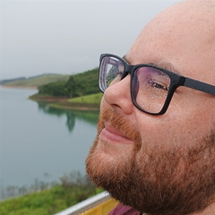

Hello World, sou o Pedro.
Aluno de Desenvolvimento de Software na FATEC de São José dos Campos, apaixonado por tecnologia e curioso inveterado.
Neste portofólio você poderá saber mais sobre minhas habilidades e projetos que participei.
